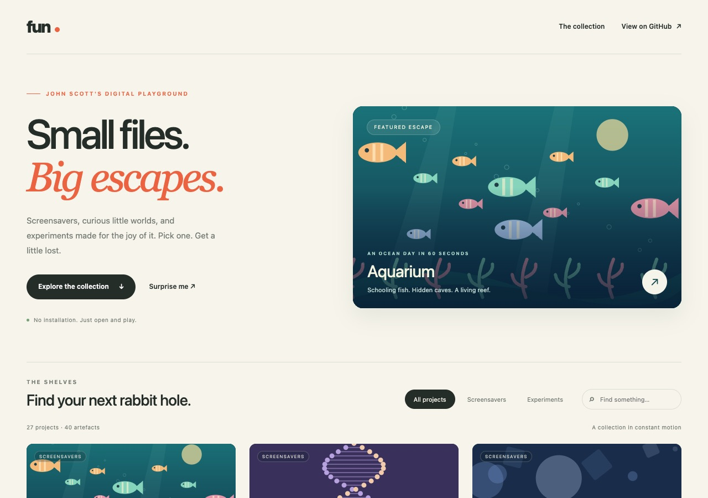
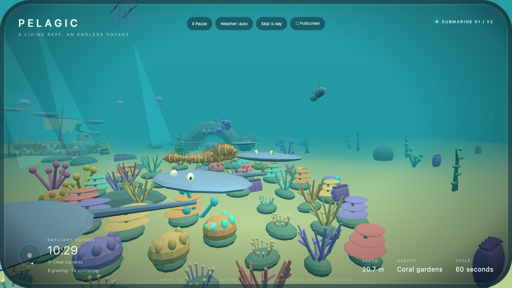
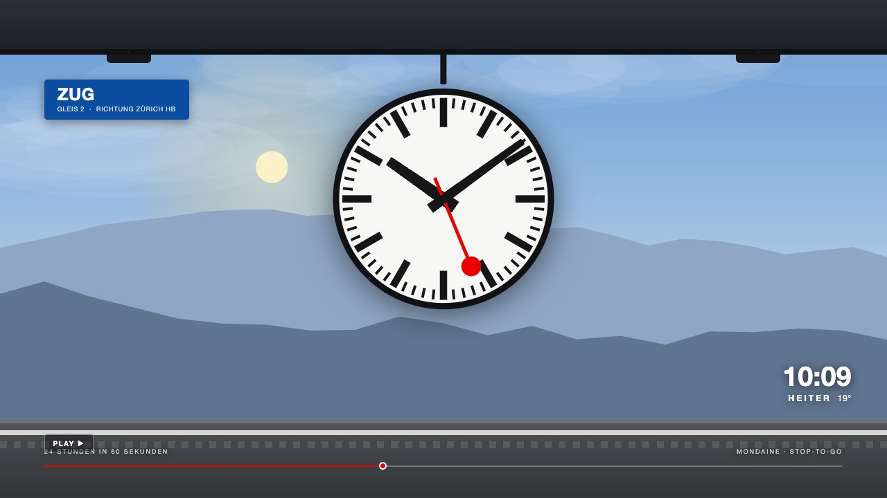
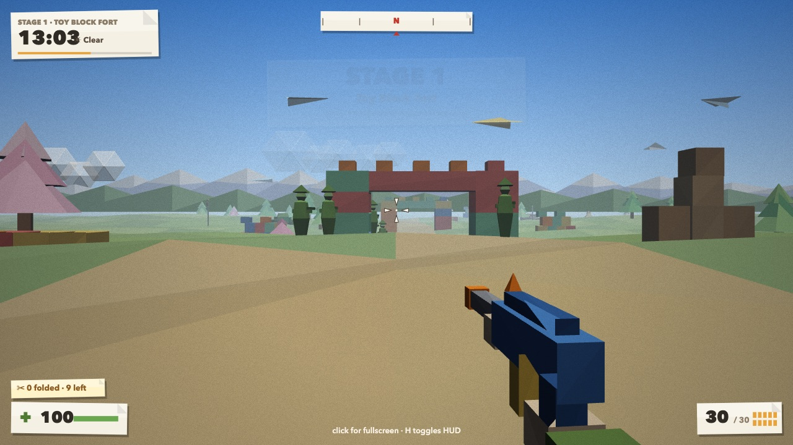

Fun - a gallery of single-file HTML toys
My fun repository is a gallery of screensavers and small experiments, each one a single HTML file you open in a browser and watch.
Fun is where I keep things I make for the joy of it: screensavers, small simulated worlds and experiments. There are 27 projects and 40 files so far. Each one is a single HTML file with everything inside it. There's nothing to install and no build step: open it and it plays.

A day in a minute#
Most of the screensavers share one idea: a whole day in 60 seconds. The light changes from sunrise to moonlight, the weather rolls through, and then the loop starts again.
- Aquarium follows a submarine past a coral garden, a kelp meadow, a shipwreck and a glowing cave. Version 2 has 156 animals with their own behaviour: fish school together and scatter from sharks, turtles graze, octopuses explore and seahorses hide in the kelp.
- Swiss station clock is the SBB platform clock, drawn to Hilfiker's geometry, with 24 hours passing in a minute, a train going by and a scripted Swiss weather day.
- Retro arcade cycles through homages to Frogger, Pac-Man, Space Invaders, Asteroids, Galaga and Donkey Kong, under the same compressed sky.


Origami FPS, six versions in#
Origami FPS is a first-person walk through a toy battlefield where everything is folded paper. It plays itself: you aim, fire in bursts and reload, and allies and enemies fight around you. Each version adds one idea:
| Version | What it added |
|---|---|
| v1 | The paper battlefield, a 60-second day and blended weather |
| v2 | Enemies flutter down as sheets of paper and fold into soldiers |
| v3 | Real folding: each soldier folds up from one connected paper net |
| v4 | Foxes, frogs, crane bombers and peaceful rabbits, penguins and elephants |
| v5 | Lighting from behind you and a bright, blue full moon |
| v6 | A themed stage every day, with enemies hiding behind walls |

Two URL parameters jump straight to a moment: ?t= sets the time of day in seconds and ?w= the weather (clear, cloudy, rain, storm, snow or fog). For example: https://johnoscott.github.io/fun/html-screensaver/origami-fps/origami-fps-v6.html?t=40&w=snow
How the gallery builds itself#
The files live in two folders: html-screensaver/ for the finished pieces and experiments/ for scratch projects from AI-tool sessions. Every project folder has a changelog.
On every push to main, a GitHub Actions workflow runs a short Node script (scripts/build-pages.mjs) that:
- finds every HTML file in both folders and groups versions (
-v1,-v2, …) into one card per project; - takes each card's name from the file's
<title>; - checks that every local file a page links to exists, and offers only the source for pages that can't run on their own (server templates, missing bundles);
- writes the gallery page and a
catalogue.json, then publishes to GitHub Pages.
Adding a toy means adding a file. To preview the gallery locally:
node scripts/build-pages.mjs
python3 -m http.server 8000 --directory _siteThe code is at https://github.com/johnoscott/fun, and the gallery is at https://johnoscott.github.io/fun/. Press "Surprise me" to start somewhere random.